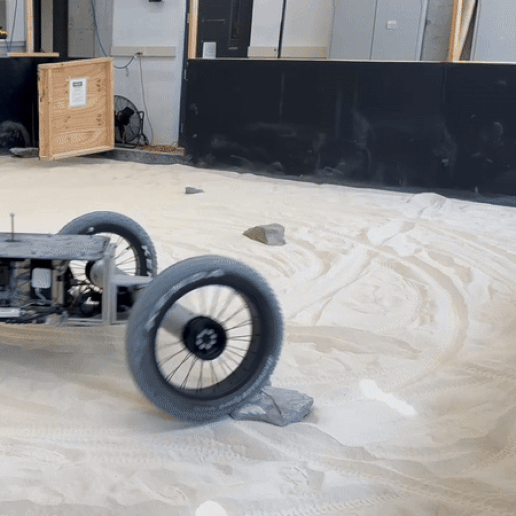
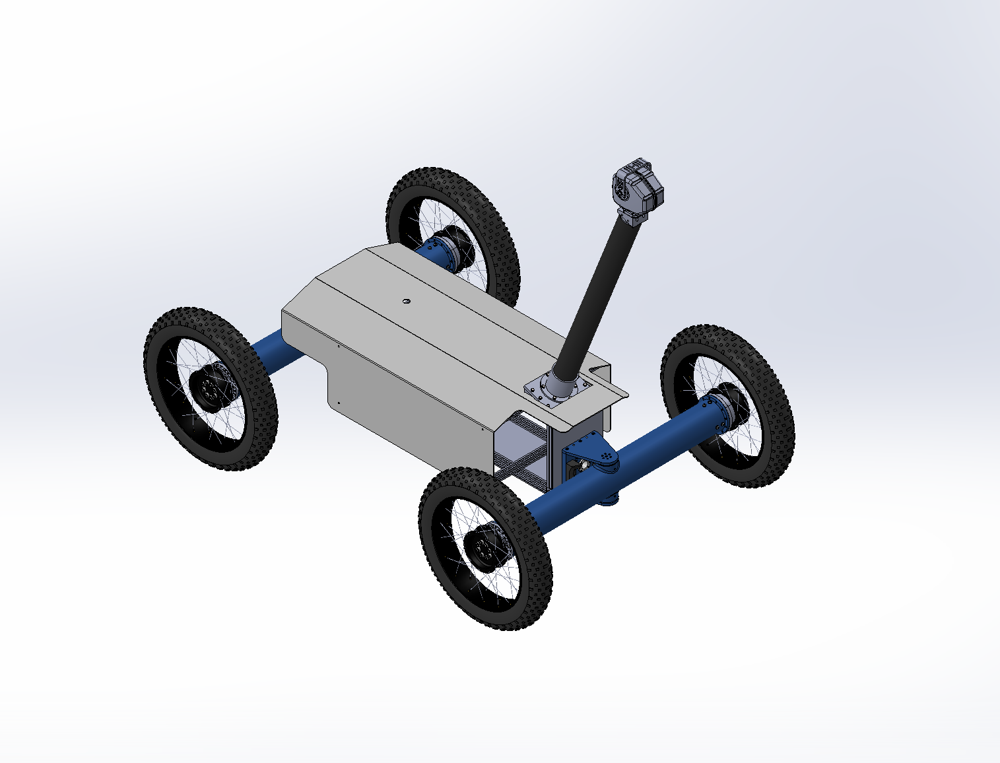
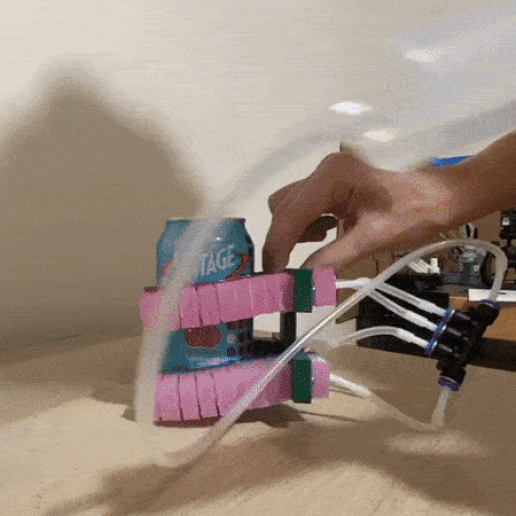
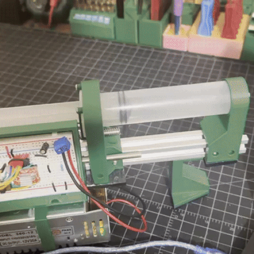
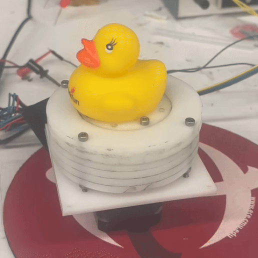
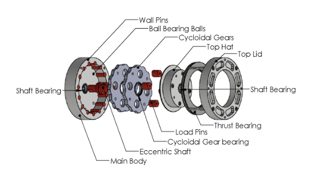
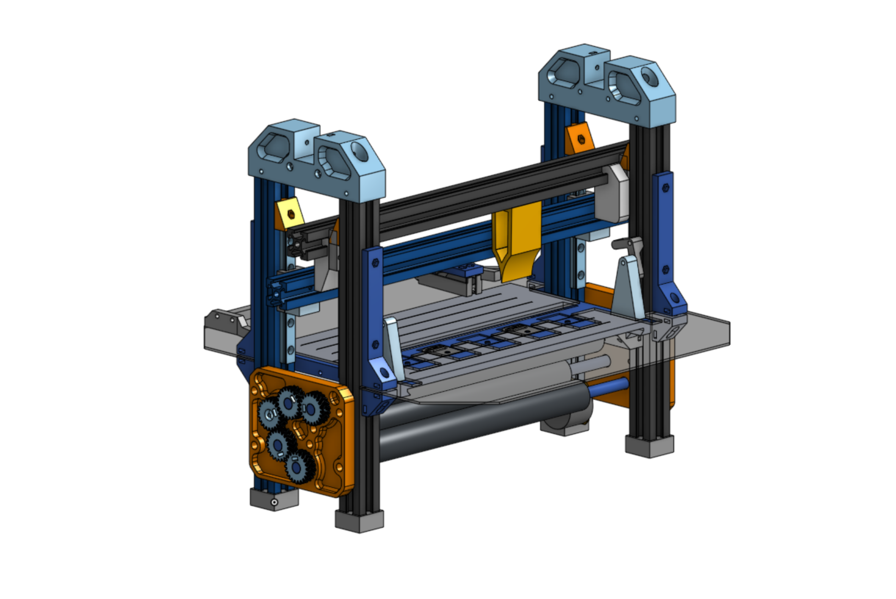
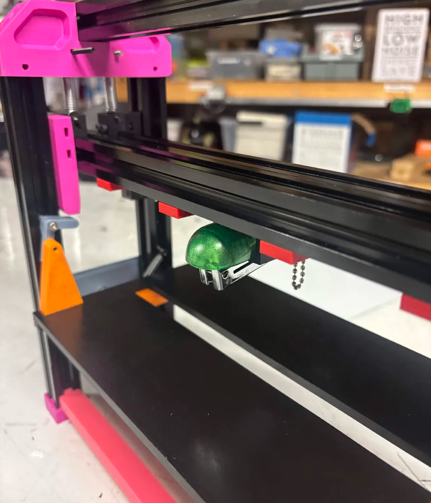
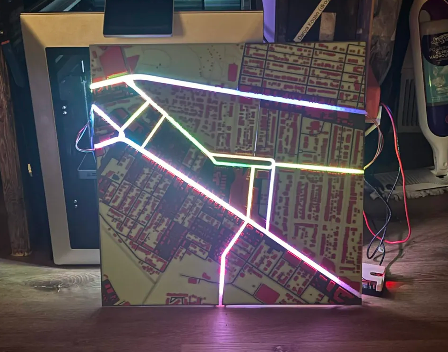
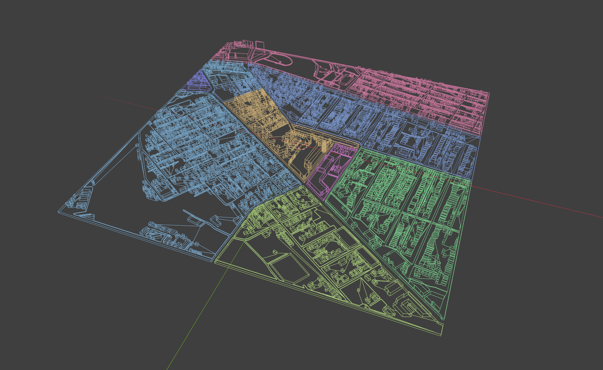

Technical Expertise & Tools
Projects
Zoe 2 Field Rover — Planetary Robotics Lab, CMU In Progress


Mechanical design and fabrication lead for Zoe 2, a field rover developed at CMU's Planetary Robotics Lab for autonomous astrobiology and terrain research.
Zoe 2 Field Rover — Planetary Robotics Lab, CMU In Progress


Mechanical design and fabrication lead for Zoe 2, a field rover developed at CMU's Planetary Robotics Lab for autonomous astrobiology and terrain research.
The Problem
Field rovers often need to survive harsh, unstructured terrain while carrying sensitive science payloads — every mechanical component has to balance ruggedness and serviceability in the field.
Approach & Methodology
I currently lead the mechanical design and in-house manufacture across several rover subsystems, manufacturing components myself using CNC and manual machining tools which allows me to quickly iterate between design revisions and physical tests.
Previously, I was responsible for manufacturing components for the steering subsystem, and designed the internal electronics mounts. Since the rover's field missions will operate in the Atacama Desert, fans were ruled out to avoid pulling dust into the electronics enclosure — so I ran thermal FEA to validate that the mounts could passively dissipate heat from onboard electronics within safe operating limits.
Current Status
I am currently designing and manufacturing the sensor mast, which is necessary for the rover's navigation capability during field deployment.
Soft Robotic Gripper with Pneumatic Syringe-Pump Actuation


A soft robotic gripper actuated via a custom Arduino-controlled syringe pump, designed to be made from low-cost hardware accessible to hobbyists.
Soft Robotic Gripper with Pneumatic Syringe-Pump Actuation


A soft robotic gripper actuated via a custom Arduino-controlled syringe pump, designed to be made from low-cost hardware accessible to hobbyists.
The Problem
I think soft robotics is a very interesting field and wanted to build my own soft actuators.
Approach & Methodology
I designed and fabricated 3D-printable molds in which I casted silicone to create pneumatically actuated soft fingers. The molds took many iterations to get right, as I experimented with different materials and fabrication methods.
To actuate my soft fingers, I used a syringe to manually inflate them. While this showed off my proof-of-concept, this offered no repeatable or programmable control over grip force and timing.
To solve this, I designed and built a custom Arduino-controlled, stepper motor-driven, syringe pump.
Results & Impact
The gripper successfully grasped cans of seltzer, and tools such as hammers and wrenches.
Mid-Range Cycloidal Gearbox Design — CMU Robotics Club


Designed and fabricated a low-backlash cycloidal gearbox targeting a gap between expensive industrial cycloidal drives and low-torque 3D-printed hobbyist designs.
Mid-Range Cycloidal Gearbox Design — CMU Robotics Club


Designed and fabricated a low-backlash cycloidal gearbox targeting a gap between expensive industrial cycloidal drives and low-torque 3D-printed hobbyist designs.
The Problem
Commercially available cycloidal gearboxes offer excellent backlash and torque density but are priced and engineered for industrial use, putting them out of reach for student teams and labs. Hobbyist 3D-printed cycloidal designs fill the low end, but lack the torque capacity and durability that some specific projects may need. I set out to design a cycloidal gearbox for that gap: mid-range torque and durability, manufacturable with standard makerspace tools, at a fraction of industrial cost.
Approach & Methodology
I designed the gearbox in SolidWorks, targeting a 14:1 reduction capable of 3.3 Nm input / 56 Nm output torque. I laser-cut most of the parts from high-strength acetal and then stacked and bonded them.
The main body and cycloidal gears required additional fabrication using a drill press with a ball end mill to cut hemispherical recesses for ball bearings balls. I machined the wall pins, load pins, and eccentric shaft from 4140 steel on a manual lathe; the eccentric shaft's off-center features required custom aluminum jigs, which I machined on the mill, to hold it accurately on the lathe, plus additional milling to cut its rectangular input profile.
For testing, I designed and built the physical test rigs — a bracket holding the motor and gearbox for dynamic testing in a mill vise, and a robot-leg test rig secured with ratchet straps for static load testing against a scale. Teammates handled the ODrive motor control software and the Python data-collection scripts used to extract torque and velocity data from these rigs.
Results & Impact
Dynamic testing data ended up unreliable, likely due to the motor bracket over-constraining the motor and misaligning the ODrive's encoder magnets. I'm no longer working on this project — the CMU Robotics Club is continuing development, including redesigning the motor bracket, running FEA to guide reinforcement/mass reduction, and using the gearbox's eventual efficiency data in Gazebo simulations for the quadruped robot's walking controller.
Zine Folding & Stapling Assist Tool In Progress


A semi-automated tool that speeds up zine assembly by mechanically assisting stapling and folding, reducing the time and repetitive strain of hand-assembling zines in volume.
Zine Folding & Stapling Assist Tool In Progress


A semi-automated tool that speeds up zine assembly by mechanically assisting stapling and folding, reducing the time and repetitive strain of hand-assembling zines in volume.
The Problem
In my social circles, a lot of people like to make zines — self-published booklets on a variety of topics. One of the most tedious parts of the process is printing, stapling, and folding them. Machines that automate this already exist for bookbinding and magazine publications — why not for zines too? I'd previously attempted a similar folding mechanism for a campus publication, using a buckle-folding mechanism that had an unacceptably high failure rate during testing.
Approach & Methodology
My failiure with the previous attempt at making a publication-folding made me decide on a knife-folding mechanism right off the bat.
The buckle-folder's failure led me to choose a knife-folding mechanism from the outset this time. In knife folding, pages lie flat and a wedge presses down into a slot, where rollers grab and pull the pages through, creasing the fold — as opposed to buckle folding, which replaces the "knife" with the paper itself buckling under compression. Before the knife descends, a stapler head presses down to staple the pages together, and a guide holds the pages against a fixed edge to keep results consistent from run to run.
Components were manufactured using 3D printing, laser-cutting, and hand tools (drill). I designed the folder around materials and tools a hobbyist would realistically have at home, since I'm planning to release the design open-source and want to make it accessible.
Current Status
I recently completed a first full test run, which revealed the stapler was slightly wobbly — causing staples to bind sheets inconsistently, and occasionally fail to punch through entirely. Feedback from friends who tested the tool also highlighted awkwardness in loading pages. My next steps focus on fixing both issues.
Once the rate of failiure is within an acceptable margin and user experience is improved,
I will make the files and assembly instructions open-source via GitHub.
Real-Time Transit Map In Progress


A 450×450mm 3D-printed physical map of my neighborhood that displays real-time bus locations and arrival estimates using backlit translucent road segments and 7-segment displays, driven by live transit API data.
Real-Time Transit Map In Progress


A 450×450mm 3D-printed physical map of my neighborhood that displays real-time bus locations and arrival estimates using backlit translucent road segments and 7-segment displays, driven by live transit API data.
The Problem
I don't like to check my phone to keep track of when my bus will arrive. Hence I decided to build a very cool-looking 3D map which displays the real-time locations of the busses, as well as time-estimates for their arrivals (using the same data source as the apps).
Approach & Methodology
I used an onliine tool to convert GIS data into a 3D-model of my neighborhood complete with roads, 3D buildings, and terrain. In order to make the model printable, I had to modify the mesh using Blender, and added features necessary for holding electronic components using Onshape.
I used a multi-color 3D printer to print sections of the map, rather than whole, as the build volume of the printer did not allow such big parts. The road segments used by the 5 bus lines I will track I printed separately using translucent PETG, such that LED strips mounted underneath could shine through to indicate bus positions.
To pull API data from Pittsburgh's transit agency and to illuminate LEDs, I am using a Raspberry Pi. I mounted the LED strips to 3D-printed guides just under the PETG roads of the map.
Current Status
The physical map and backlit road segments are built. I'm currently developing the software to convert real-time bus GPS data from the transit API into LED position updates, and I next plan to integrate the 7-segment arrival-time displays.
Photography
You made it to the bottom of my website! If you'd be so inclined, I implore you to check out my film photography! The photos can be enlarged by being clicked on, and information about each photo will be displayed. Reload to reshuffle which photos get shown.